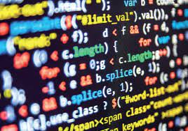
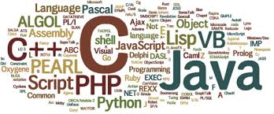

YouTube
#Yoon Coding
#Yoon Coder
#Yoon
Clone Coding: Youtube Mobile Website 유튜브 모바일 웹사이트 따라 만들기 | 프론트엔드 개발자 입문편: HTML, CSS, Javascript 드림코딩과 함께하는 프론트엔드 실전 입문편
조회수 1 회 ㅣ 2021. 10. 03
number
number
Share
Save
Report
개발자 by 윤민
2M subcribers
SUBSCRIBE
UP next

프론트엔드 유튜브 웹 처음 만들어보기! 풀스택 개발자를 위한 길을 걷기
개발자 by 윤민
300 views
더러운 코드, 보기 쉽고 깔끔한 코드로 탈바꿈하는 방법
개발자 by 윤민
100 views

여기는 단지 HTML,CSS를 위한 공간입니다. JS는 아직 준비가 덜 되어서 기능은 없답니다...ㅎㅎㅎ
개발자 by 윤민
200 views